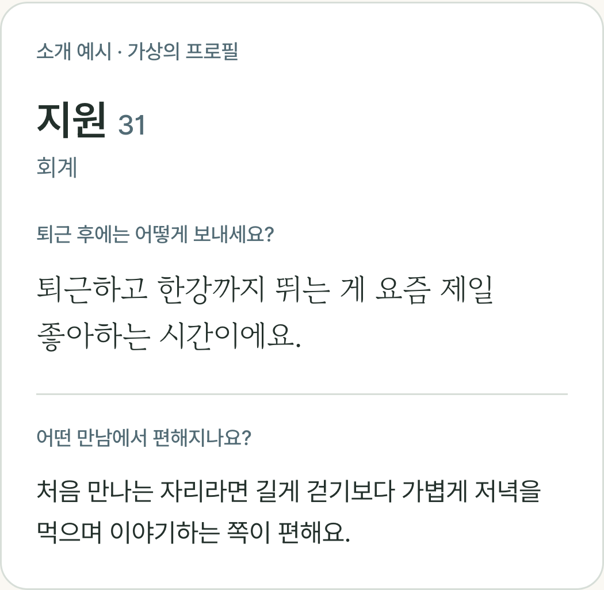

after.
소개팅도,
덜 애써도
됐으면.
새로운 사람을 만나는 일까지
또 하나의 업무가 되지 않도록.
새로운 사람을 만나는 일까지
또 하나의 업무가 되지 않도록.
저녁을 먹고
동네를 한 바퀴 걸어요.
하루가 조금 정리돼요.
이런 이야기가,
누군가에겐 대화의 시작.
퇴근하고 집 근처 산책해요.
계획 없이 걷다 보면
하루가 정리돼요.
처음부터 잘 쓴 소개글보다,
내가 평소에 쓰는 말로.
퇴근 후에는 집 근처를
산책하는 편이에요.
계획 없이 걷다 보면
하루가 정리돼요.
답변의 뜻은 그대로,
읽기 편한 문장으로.
내가 저장한 소개장만
상대에게 보여요.

몇 가지의 선택,
세 가지의 이야기.
애프터는 거기서 시작해요.
나를 과장하지 않아도 괜찮은 소개팅,
함께 만들어가고 있어요.
퇴근한 나에게,
조금 덜 막막한 시작.
퇴근 후에는 어떻게 보내세요?
퇴근하고 집 근처 산책해요.
계획 없이 걷다 보면
하루가 정리돼요.
가상의 답변 예시 · 회원 후기 아님
퇴근 후에는 어떻게 보내세요?
퇴근 후에는 집 근처를
산책하는 편이에요.
계획 없이 걷다 보면
하루가 정리돼요.
설명용 편집 예시 · 실제 생성 결과 아님
직장인을 위한 소개팅.
참여 안내는 프로필 링크에서.